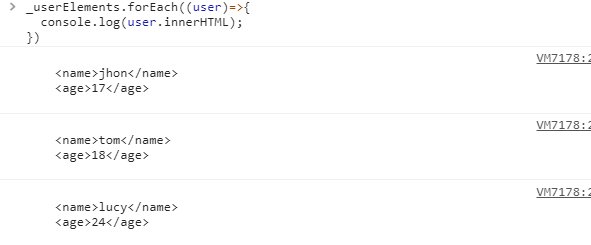

在平时的业务开发中，数组(Array) 是我们经常用到的数据类型，那么对数组的排序也很常见，除去使用循环遍历数组的方法来排列数据，使用JS数组中原生的方法 sort 来排列（没错，比较崇尚JS原生的力量）。
数组中能够直接用来排序的方法有：reverse() 和 sort(),由于 reverse()方法不够灵活，才有了sort()方法。在默认情况下，sort()方法按升序排列数组。
var arr=[1,3,5,9,4];
console.log(arr.sort());
// 输出: [1, 3, 4, 5, 9]
这时发现数据按照从小到大排列，没问题；于是再把数组改成：var arr=[101,1,3,5,9,4,11];，再调用sort()方法打印排序结果。
var arr=[101,1,3,5,9,4,11];
console.log(arr.sort());
// 输出: [1, 101, 11, 3, 4, 5, 9]
这个时候发现数组101,11都排在3前面，是因为 sort() 方法会调用数组的toString()转型方法，然后比较得到的字符串，确定如何排序，即使数组中的每一项都是数值，sort()方法比较的也是字符串。
那么字符串又是怎么排序的呢，是根据字符串的unicode编码从小到大排序的。下面我们尝试打印出数组每一项的unicode编码看一下。
...
// 转码方法
function getUnicode (charCode) {
return charCode.charCodeAt(0).toString(16);
}
// 打印转码
arr.forEach((n)=>{
console.log(getUnicode(String(n)))
});
// 输出: 31 31 31 33 34 35 39
惊奇地发现，1,101,11的字符串unicode编码都是31
以上发现sort()方法不是按照我们想要的顺序排序的，那么，怎么解决呢，sort()方法可以接收一个比较函数作为参数，以便指定哪个值位于哪个值前面。
比较函数(compare)接收两个参数，如果第一个参数位于第二个之前则返回一个负数，如果两个参数相等则返回0，如果第一个参数位于第二个之后则返回一个整数。
function compare(value1,value2){
if (value1 < value2){
return -1;
} else if (value1 > value2){
return 1;
} else{
return 0;
}
}
我们把比较函数传递给sort()方法，在对arr数组进行排列，打印结果如下：
var arr=[101,1,3,5,9,4,11];
console.log(arr.sort(compare));
// 输出: [1, 3, 4, 5, 9, 11, 101];
可以发现排序从小到大没有什么问题。
sort() 方法通过传入一个比较函数来排序数字数组，但是在开发中，我们会对一个对象数组的某个属性进行排序，例如id，年龄等等，那么怎么解决呢？
要解决这个问题：我们可以定义一个函数，让它接收一个属性名，然后根据这个属性名来创建一个比较函数并作为返回值返回来（JS中函数可以作为值来使用，不仅可以像传递参数一样把一个函数传递给另一个函数，也可以将一个函数作为另一个函数的结果返回，函数作为JS中的第一等公民不是没有原因的，确实很灵活。），代码如下。
function compareFunc(prop){
return function (obj1,obj2){
var value1=obj1[prop];
var value2=obj2[prop];
if (value1 < value2){
return -1;
} else if (value1 > value2){
return 1;
} else{
return 0;
}
}
}
定义一个数组users，调用sort()方法传入compareFunc(prop)打印输出结果：
var users=[
{name:'tom',age:18},
{name:'lucy',age:24},
{name:'jhon',age:17},
];
console.log(users.sort(compareFunc('age')));
// 输出结果
[{name: "jhon", age: 17},
{name: "tom", age: 18},
{name: "lucy", age: 24}]
在默认情况下，调用sort()方法不传入比较函数时，sort()方法会调用每个对象的toString()方法来确定他们的次序，当我们调用compareFunc('age')方法创建一个比较函数，排序是按照对象的age属性排序的。
尽管现在很多后台返回数据就是JSON格式的，很轻量又方便解析。但是之前有个项目因为后台返回的都是XML字符串，前端拿到数据后还得进行序列化，有些需要排序，之前的排序都是把XML转换成数组对象进行排序的，这样做没有什么问题，只不过感觉代码写的很冗余麻烦。后来就突发奇想，xml获取得到也是类数组对象，把类数组对象转换成数组不就可以直接排序了么。
// 1.模拟后端返回的XML字符串
var str=`
<root>
<user>
<name>tom</name>
<age>18</age>
</user>
<user>
<name>lucy</name>
<age>24</age>
</user>
<user>
<name>jhon</name>
<age>17</age>
</user>
<root>
`
// 2.定义比较函数
function compareFunction(prop){
return function (a, b) {
var value1= a.getElementsByTagName(prop)[0].textContent;
var value2= b.getElementsByTagName(prop)[0].textContent;
if (value1 < value2){
return -1;
} else if (value1 > value2){
return 1;
} else{
return 0;
}
}
}
// 3.xml字符串转换成xml对象
var domParser = new DOMParser();
var xmlDoc = domParser.parseFromString(str, 'text/xml');
var userElements=xmlDoc.getElementsByTagName('user'));
// 4.userElements类数组对象转换成数组再排序
var userElements=Array.prototype.slice.call(xmlDoc.getElementsByTagName('user'));
var _userElements=userElements.sort(compareFunction('age'));
// 5.打印排序后的结果
_userElements.forEach((user)=>{
console.log(user.innerHTML);
});
打印排序后的结果

可以发现，XML节点已经按照age从小到大排序了。
JS数组的sort方法因为有了传入比较函数使得排序灵活了许多，还有根据时间，汉字拼音首字母排序等等，我们只要牢记通过传入比较函数明确比较两个对象属性值，通过比较属性值来决定对象的排序顺序即可。自己也是在工作中遇到问题从而发现解决问题的新思路，以上就简单总结这么多了，如有不足，多多指正。
参考资料： 《JavaScript高级教程》